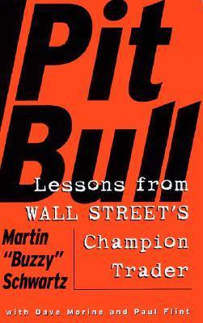

By Martin “Buzzy” Schwartz · 1998 · 329 pages
Monday morning, August 13, 1979. Martin Schwartz walks through the “Members Only” door at 86 Trinity Place for his first day on the floor of the American Stock Exchange. He is thirty-four years old, terrified, and carrying the weight of a decade of failure. He has degrees from Amherst College and Columbia Business School. He has been a U.S. Marine. He has spent nine years as a securities analyst, flying city to city, kissing up to portfolio managers. And in all that time, he has never made a dime playing the market.
The Amex floor is a world of its own — the B team of finance, descendants of the Curb Exchange, the bootleg traders who ran their books on the streets outside the NYSE from the 1890s until 1921. Guys named Chickie and Frannie and Donnie. Irish, Italians, and Jews, not WASPs who had gone to the right schools. The members’ lounge has Naugahyde, not leather; cigarettes, not pipes. There are no seats — you buy a seat but you stand all day in crepe-soled shoes.
His first trade is Mesa Petroleum October 65 call options. He buys ten at $3 each from specialist Louis “Chickie” Miceli, who calls him “Newboy.” The stock immediately drops. He doubles down — twenty more at 2-9/16, then twenty more at 2-3/16. He is now holding fifty call options, hemorrhaging money, sitting in Trinity Church Burial Ground in front of Alexander Hamilton’s grave. Hamilton was the first Secretary of the Treasury but resigned due to personal financial problems. Schwartz wonders how someone so smart could get so screwed up. “Now I was beginning to understand.”
“What’ll it be, Newboy, trade or fade?” — Chickie Miceli
His wife Audrey is his anchor. She told him: “You’re thirty-four and you’ve always wanted to work for yourself. The worst that can happen is you go bust and go back to being an analyst.” His family history drives him: his father, the “chosen son” of immigrant parents, graduated from Syracuse into the 1929 crash, bounced between jobs, then took all the family’s money and bought a grocery store four doors from a First National supermarket. His mother said: “He was so desperate. I had to give him the chance to fail. Even failure was better than doing nothing.” Schwartz is terrified of repeating the pattern.
His mentor Bob Zoellner is the best trader he has ever met. Schwartz ran into him at Edwards and Hanly in 1973, a small retail brokerage firm. In the 1974 bear market, Zoellner almost single-handedly kept the company afloat by shorting stocks and making millions. After the firm went under, Zoellner retreated to Hackensack and set up a small hedge fund. Schwartz would visit him there, watching as he reeled the Dow Jones ticker tape through his purple-stained fingers hour after hour, a huge Atlantic salmon mounted on the wall above. “Marty, you have to feel the tape,” Zoellner would say. “It’ll tell you everything you need to know. It can rise on bad news and sink on good news. If you can read the tape, you know when it’s healthy, and when it’s sick.” Zoellner gave him the Mesa tip and keeps reassuring him to hold. Schwartz calls Zoellner repeatedly from the floor phones for emotional support.
Day three, Mesa opens up and explodes. Schwartz sells twenty at 4, thirty at 4¼. Total proceeds $20,750 on $12,500 invested — about $8,000 in profit. He has found the promised land. He immediately rolls into Digital Equipment options with specialist Frannie Santangelo, the toughest guy on the floor, who will not give him a sixteenth. “I know you want to show me who’s boss, you pizza parlor operator. You got me today, but I’m here to stay.”
The chapter’s interstitial, “Mashed Potatoes,” delivers the first trading lesson. A couple of months in, Schwartz is up $10,000 on paper at 3:59 PM. He and Hayes Noel, his friend and guide to the floor, are dancing the mashed potatoes, twisting their crepe soles and singing Dee Dee Sharp’s 1962 hit. The market opens way down the next day and he loses the entire $10,000 in paper profits.
“When you feel like doing the mashed potatoes, it’s a visceral clue that you’ve lost your objectivity, you’ve gotten too emotional, and you’re about to go into the shitter.” — Schwartz
The lesson is permanent: cash the profits before celebrating. The impulse to dance is a sell signal on your own psychology.
Summer 1978. Schwartz and Audrey visit friends Rich and Susan Bertelli in Danbury, Connecticut. Rich is a battery salesman for Union Carbide. Susan is a freelance computer jockey. Together they earn far less than the Schwartzes’ combined $100,000+, yet they own a beautiful four-bedroom colonial. Their secret: a plan. Schwartz and Audrey are paying rent, getting zero tax deductions, and watching the real estate market boom without them.
Driving home, Schwartz misses the turn for Route 684. They are heading toward Newburgh, New York, a “beat-up old dump of a town.” At the Fishkill toll plaza, he does a U-turn across the eastbound lanes. Audrey shrieks, tires squeal, horns honk. “Finally, I was heading in the right direction.” That night at the kitchen table, they write THE PLAN:
The methodology is Terry Laundry’s Magic T Theory. Laundry is an MIT graduate and fellow Marine living on Nantucket Island. His theory holds that the market spends equal time going up as going down, with a cash buildup phase in between. The T shape represents bilateral symmetry — Darwinism, evolution, the natural order of things. Schwartz works fourteen hours a day, seven days a week: drawing trend lines, formulating weekly opinions, reviewing charts nightly, recalculating moving averages, figuring inflection points, setting entry and exit prices.
The transformation from fundamentalist to technician is total. Before, Schwartz analyzed inflation rates, P/E ratios, yields, and profit margins. Now he treats the market as one living organism rather than a collection of individual stocks. He reads everything: Richard Russell’s Dow Theory Letter, Barron’s, S&P Trendline Charts, Mansfield Charting, CMI Charting. He is a synthesizer, blending whatever fits his personality and mathematical bent.
“The process of doing the work was giving me an inner resource, a place to reach back in my mind for something tucked away in the recesses of the gray matter. Having a methodology gave me strength, because in my mind’s eye I could see that I’d been there before.” — Schwartz
His trading style emerges: primarily options (mostly calls, bullish on the market) on major companies he knows from his analyst days — Syntex, IBM, Honeywell, Teledyne, Polaroid, Xerox. He is a scalper, jumping in and out of positions in hours or minutes. Positions range from $5,000 to $15,000, looking for $1,000 to $3,000 per play. A singles hitter, not swinging for the fences. After breaking even in 1976 and 1977, he is now consistently making money.
The “Grubstake” section delivers a critical principle: “You have to prove your abilities and test your methods by actually trading, and making real money, before you depend on trading for your livelihood.” He borrows $50,000 from his in-laws as backup — Dumbo’s feather, never used. The grubstake must be earned, not borrowed. Making it AND saving it teaches money management discipline.
He quits E. F. Hutton on a Monday morning — early in the day, early in the week. Audrey counsels honesty with his boss Dan Murphy. He leaves on such good terms that Murphy lets him keep an office for six more months. On Wall Street, this is unheard of. “Because I was making a vertical leap, going out on my own, I left like a hero.”
Schwartz’s gambling education begins at age seven, flipping baseball cards against a wall. By ten he is shoveling snow to fund poker games in Eddie Cohen’s basement. By fifteen, he is caddying for his grandfather Pappy Snyder and heading straight to the poker table. The moral is consistent: preparation pays, you must know more than the other players, and you have to be willing to toe the line and pull the trigger.
Horse racing at Aqueduct becomes his university. He studies racing forms, researches trainers, charts jockeys, calculates projected times, scrutinizes the tote board for imbalances. He is all business — not there to eat, drink, or socialize. At Amherst, he takes the Peter Pan bus up to a small track in Hinsdale, New Hampshire, dreaming of someday owning a farm with orange maples and white fences.
A European trip between Amherst and Columbia introduces casino gambling. Schwartz plays progression systems at roulette in Divone, France, feeling like James Bond. He stays ahead across Europe until London, where exhaustion and ego combine to produce the worst possible outcome: he bets against himself at craps (don’t pass while being the shooter) and makes seven straight passes. He writes a dramatic journal entry vowing never to gamble large again. It is, he admits, “all bullshit.”
Ricky G., from his Marine Reserve Russian Interrogation Team in Brooklyn, introduces him to bookie Carmine at the Aqua Vitae Diner in Yonkers. Code name: Maple Sugar. Football betting goes fine; basketball gets out of control. A “double if-then reversal” bet saves him — Louisville comes back from fifteen points down to cover. He collects $4,000 in cash in front of a Godfather movie poster.
The honeymoon on Paradise Island crystallizes the tension between gambling and life. Audrey appears in a negligee with champagne and chocolate strawberries. Schwartz: “Why aren’t you dressed? The tables open at one.” She locks herself in the bathroom. The lesson: keep your priorities straight.
Three rules from craps that apply to trading emerge from the “Viva Las Vegas” section. First, divorce your ego from the game — do not get emotionally involved. Second, manage your money — keep cash in a safe deposit box at the casino and force yourself to physically leave the table to get more. Third, change tables after a winning streak — the luckier you have been, the surer your luck will change.
“Show me a great trader and I’ll show you someone who understands gambling.” — Schwartz
Schwartz’s first real job after Columbia is at Kuhn Loeb in 1970 at $16,000 a year. Kuhn Loeb is an old-line, well-respected Jewish firm owned by the Schiff family. His mentor Abe Bronchtein, an MIT graduate and drug analyst, assigns him to the drug chains — Rite Aid, Revco, Eckerd — and introduces him to health care. An early assignment takes them to meet Jack Clark of Four Seasons Nursing Centers at the Regency Hotel on Park Avenue. Clark wears $1,500 alligator shoes. Schwartz cannot remember a word of the interview — only the shoes. “No rational person on this earth would pay $1,500 to walk down the street in a depreciating asset.” Four Seasons turns out to be a fraud — Clark inflates construction profits as operating earnings, representing them as revenue from nursing home operations. Trading is halted. Clark goes to prison. The lesson sticks: beautiful shoes do not make a beautiful company.
Hospital management becomes Schwartz’s primary expertise. Unlike Four Seasons, companies like Hospital Corporation of America and American Medicorp are legitimate businesses riding the wave of Medicare and Medicaid. Schwartz writes favorable reports, moderates institutional luncheons where CEOs fly in on private planes, and ingratiates himself with management in hopes of attracting investment banking fees. He is a central part of the dog and pony show.
In 1972, Schwartz moves to a prestigious boutique firm he calls “The Great Pyramid” at $50,000. Unlike Kuhn Loeb’s team culture, the Pyramid is every man for himself. The firm sits on the thirty-third floor overlooking the harbor and the Statue of Liberty — ironic, since the building is full of people whose families fled the pogroms of Eastern Europe but now act like they came over on the Mayflower, joining country clubs, summering in the Hamptons, and sipping wine at the Guggenheim.
The Sphinx, an accounting sleuth with a hunting license to investigate any industry, warns Schwartz that hospital management earnings are inflated. The fastest-growing revenue source is Medicare and Medicaid charges, but those are just estimates — actual reimbursements come from government audits that are two to three years behind. The companies are recording receivables optimistically, inflating earnings, and selling at thirty to forty times those earnings. The Sphinx’s verdict: “This is gonna be a utility rate of return business.” They co-write a report that is effectively a SELL recommendation, unprecedented on Wall Street where HOLD is as negative as anyone goes.
Analyst Paul Standish takes the confidential draft and mails it to someone at Scudder Stevens & Clark. Scudder’s clients start selling. American Medical International drops 5-7/8, Hospital Corporation of America falls 22 percent. Dan Dorfman’s “Heard on the Street” column calls it a “nightmare” for the Pyramid. Uranus J. Appel, AMI’s chairman, goes orbital — demands an NYSE investigation, calls the report “amateurish,” and says it shows “very little understanding of what the health care field is all about.”
Schwartz testifies for six hours at the NYSE under oath, drawing on his Marine Corps interrogation training. Eventually exonerated — Standish admits the leak — but California stockholders sue Schwartz personally for $816,200 alleging conspiracy and market manipulation. The suits are dismissed for lack of venue on March 15, 1973, but by then nobody notices because the entire market has gone to hell.
The Pyramid keeps him on payroll just long enough for the suits to be dismissed, then fires him. The High Priest and the Prophet never take the hit — Schwartz is the block that gets crushed. “On Wall Street, you didn’t wear a bulletproof vest in the front, you wore it in the back.” Nobody else will hire him. He is a “tar baby” — people do not care about the facts, they just do not want to get stuck with him. He files for unemployment on Broadway and 89th. The Sphinx turns out to be wrong long-term: hospital management companies grow for twenty years as health care climbs from 6 to 16 percent of GNP. But the experience toughens Schwartz and leads him to Zoellner, which is worth everything.
After the firing, Schwartz takes the summer off in the Hamptons and falls into commodities. He puts $5,000 into Paul Goldstein, a computer geek running a time-sharing commodity trading system that can only afford computer time at three in the morning. He puts $20,000 into a Russian wheat futures deal through Ricky G., who has a commodities broker with a brother-in-law who supposedly has a direct line to a guy in Washington who knows a guy at the Department of Agriculture who has been to Moscow. He loses $25,000 total. The chain of people separating him from the actual information is the longest in the book and the lesson is obvious: the further you are from the source, the more certain you are to lose.
Schwartz’s love of gold is cultural and genetic. From the days of the pharaohs, Jews have loved gold because gold is portable wealth for people on the run. When his grandfather Sam Schwartz escaped the pogroms of Eastern Europe, he kept his savings in $20 Double Eagle gold coins. In 1957, senile, Grampa Sam walked to the Westville Savings Bank and cashed them in at face value — $20 apiece. They were worth $100 each. Gramma Rose, shrewder, had hidden a few coins of her own. For his bar mitzvah, she gives Schwartz a 1925D Saint-Gaudens Double Eagle, designed by Augustus Saint-Gaudens in 1907, one side bearing a majestic eagle flying over the sun, the other a woman holding the torch of Liberty. He fondles it for hours and becomes a numismatist.
The Goldfinger scene defines a turning point. At nineteen, watching James Bond with a date named Ellen Fine at the Roger Sherman Theater in New Haven, Schwartz becomes more interested in Auric Goldfinger’s plan to nuke Fort Knox than in stealing second base. Why try to steal the gold when you can irradiate it? If the largest deposit in the world suddenly becomes worthless, Goldfinger’s own holdings soar in value. Of course Bond foils the plan, but Goldfinger becomes Schwartz’s new hero. The fascination with gold — as security, as cultural memory, as investment — never leaves him.
It is not until December 31, 1974, that Americans are legally allowed to purchase gold as an investment. Schwartz buys Krugerrands and Canadian Maple Leafs whenever he has extra money, laying them out on his pillow and flipping them into the air like Scrooge McDuck. Fear of inflation drives more and more people into hard assets. Financial bestsellers predict the end of the world — Doug Casey’s Crisis Investing, Howard Ruff’s How to Prosper from the Coming Bad Years — each peddling its own brand of fear-mongering.
In December 1979, Schwartz discovers ASA options on the Amex — a closed-end fund investing in South African gold mining stocks. He does his homework first and finds a correlation: Canadian and American gold stocks lead the price of gold itself, while ASA tracks the metal more closely. So when the North American gold stocks tick up, he buys ASA call options. The action around Chickie’s horseshoe is fast and furious — blue smocks a dozen deep, pushing, shoving, screaming. He is looking at ASA’s high, low, and close, the gold prices, the mining stocks, and waiting for ASA to take out the previous day’s high before jumping in. Thanks mainly to ASA, he makes $600,000 in 1980 and $1.2 million in 1981.
When Reagan gets inflation under control and gold begins to fall in 1982, the advantage disappears. “Any old junkyard dog in a blue smock could understand it.” He still has his Krugerrands and Maple Leafs squirreled away in safe deposit boxes. They are a horrible investment — average cost around $500 an ounce, now worth close to $300. But he loves them. Gold represents security. Who knows when the Schwartzes might have to run again.
The “Going for the Gold I” interstitial is pure comedy. August 1982, Inside Skinny calls — Volcker has summoned all the bank presidents from their vacations. Mexico is going under. There is going to be a run on the banks. Schwartz sends Audrey and his brother Gerry to the bank to retrieve $100,000+ in Krugerrands. He is under a towel by the pool trading on his Quotron while shouting at Debbie Horn on the phone: “Buy, dammit! Sell! Gold! More oil!!” When Audrey asks where to hide the gold: “Under the bed, where else. I’m sleeping on it. If anybody wants my gold, they’re gonna have to go through me to get it.”
Volcker reliquefies Mexico over the weekend. Crisis over. Bond prices soar on Tuesday as rates plunge. Schwartz asks Audrey to take the gold back. “My arm still hurts from lugging it over here. I got it, you can bring it back.” The episode is absurd, but the principle is real: when you have information that might be reliable, you have to act on it, no matter how absurd you might look.
The “Inside Skinny” interstitial dissects the anatomy of a tip. Inside Skinny is an excellent analyst who trades information — gives a little, gets a little. When he calls with a tip, he has already taken his position and is making twenty calls to push the stock up. If it works, he becomes a guidance counselor, stroking everyone while feeding his stock out into the third wave of buying. If it fails, he says he got killed too. You vow never to play another rumor, but a few months later, in the middle of a losing streak, the phone rings again.
This is the book’s technical heart. The chapter opens with Genesis — Joseph interpreting Pharaoh’s dreams to mean seven years of plenty and seven years of want. Futures contracts, Schwartz explains, have been the way to protect against rising and falling prices ever since. The Chicago exchanges (the CBOT and the Merc) were originally set up to trade farm products, but by the early 1970s they were suffering from a sustained drought of new investors. Nobody wanted to buy pork bellies. Then Leo Melamed became chairman of the Merc and saw the opportunity when Nixon abandoned the gold standard in 1971. Money itself was becoming a commodity. The Merc launched currency futures in 1972. The CBOT hired Richard Sandor from Berkeley and created the thirty-year Treasury bond futures contract in 1977. The transformation from cows and corn to currencies and T-bonds was underway.
A tax windfall accelerated everything. Buried in the Economic Recovery Tax Act of 1981 was a provision that 60 percent of futures gains would be taxed at the long-term capital gains rate (20 percent), even though futures are short-term instruments you can exit in twenty minutes. Schwartz was living in New York and getting smacked at a 57 percent combined tax rate. The ability to keep an extra 18 cents of every futures dollar was serious money. Everybody playing big time had to consider trading futures.
On April 21, 1982, the Merc launches the S&P 500 Stock Index Futures Contract — what Melamed calls “the ultimate contract.” Schwartz sees immediately that every technique he has developed — the Magic T, ten-day moving averages, oscillators, stochastics — fits perfectly. It is like he has been playing at the dollar blackjack table, and all of a sudden they open a craps table with a $10,000 limit. His first S&P trade comes April 29: twenty June contracts, lost $370. The next day, forty contracts at 117.20, sold at 117.70, profit $10,000. The leverage is staggering — $120,000 in Treasury bills as a performance bond controls up to $2.4 million in assets. A 5 percent move against him wipes out the margin; a 5 percent move in his favor doubles it. And there is no cost of capital — he earns interest on the T-bills while making money on his positions.
He divides the trading day into half-hour blocks, charting the rate of change in each. He views intraday momentum like the tides — two high and two low, ebb and flow. If the S&P composite is up $0.50, then $0.30, then $0.10 in three consecutive blocks, the sine curve is about to turn down. Red light, green light, go short, pull the trigger.
The decisive discovery comes on September 10, 1982. Using his Telerate machine, Schwartz notices that after-hours movement in cash Treasury bonds predicts the next day’s S&P opening. If the physicals move up after the 3 PM bond futures close, the S&Ps will open up. He explains the mechanism to Audrey: when interest rates drop, companies pay less for capital, consumers borrow more easily, profits rise, stock prices follow. He tests the theory that Friday, going long fifty contracts. Monday morning, the S&Ps open up as predicted. Over September, the index goes nowhere — 119.40 to 119.35 — but Schwartz makes $160,000 on small daily swings. In October, the market goes supernova. He makes $1.4 million in a single month.
“I was one of the first to realize that there was a direct correlation between the cash bonds and the S&P futures. That’s because I was one of the few people who played stocks, bonds, and currencies.” — Schwartz
All of a sudden he is a thirty-seven-year-old multimillionaire. In October 1982 alone, he made more in a month than he had made in his entire lifetime. For twenty straight days, he and Audrey would get in the Eldorado to drive home and be, on average, another $70,000 richer. It would have taken a whole year to make $70,000 as a securities analyst.
The chapter also covers the ugly reality of trading in Chicago. The Merc allows “dual trading” — brokers can trade for their own accounts while executing client orders, leading to rampant front running. A broker gets your order to buy ten contracts at 80; his brother-in-law standing next to him also bids 80, knowing the client order will back him up. If the brother-in-law buys first and the price ticks up, it is a riskless trade. The client gets “ND” — nothing done. The “pit committee” has a whistle that can erase trades retroactively. Schwartz accepts “slippage” as the cost of doing business. He is supporting many “families” in Chicago.
The “Switch Hitting” section tells the story of Jerry Muldoon, who piggybacks Schwartz’s trades from Frannie Santangelo’s upstairs office. When Schwartz goes long fifty ASA options, then walks to the floor, does not like what he sees, and switches to short, Jerry grabs a softball bat. “How the fuck could you change your position?” Schwartz ducks behind a chair: “The last time I looked, we didn’t have an Irish branch.” The lesson: when the market changes sides, you cannot hold your position and hope. If they bring in a righty, you bat lefty. Practice, practice, practice.
By this point, Schwartz and Audrey are a perfectly balanced trading team. Their desks sit in an L at a ninety-degree angle so they can work shoulder to shoulder. He understands the market; she understands him. She reads his scribbles, his body language, his phone calls — she knows what he really wants to do before he does. “Buzzy, you like it. Go for it. Go for it,” she would murmur during the Telerate watch at 4:10 PM, and the S&Ps would open up a point and a half the next morning.
Election Day 1982. Audrey goes mink coat shopping with her mother Sally Polokoff. Without Audrey there, Schwartz loses his balance completely. The market surges 43.41 points — the largest single-day jump in history at that time. He shorts the S&Ps all day long, adding to the position as it moves against him, selling fifty more contracts into the locked limit at 143.85, even though the NYFE (the “knife”) clearly shows the S&Ps are really at 145+. By the close, he is short 250 contracts.
“I have what I call my sunspot theory, which says that 2 percent of the time, you become uncontrollably irrational.” — Schwartz
That night, Audrey is calm. The money is never real to her. Making it and losing it is just something Schwartz does, and she assumes that when all is said and done, he will make far more than he loses. He calls Zoellner, who delivers one of the book’s most important lines: “You can’t shift to first gear from reverse without going through neutral. Cover your position, get back to neutral. Once you’re out, things will look better. Remember, your winners are ahead of you, not in back of you.”
The next morning, Audrey screams “Get smaller, get smaller!” from over his shoulder as he starts buying in his shorts. Every contract he buys means that much less he can lose. Within forty-five minutes, he is completely out. The damage: $800,000, not the feared million. He fights back ferociously for four weeks and almost makes it all back — ends November down only $57,000, makes $928,000 in December, finishes the year up over $3 million in futures. The mink coat arrives in December. “Very nice. But then it ought to be nice. It cost us eight hundred thousand dollars.”
The episode reveals why Audrey matters. Without her there, Schwartz lost what he calls his “balance.” He had the facts on the screen but refused to believe them — the NYFE kept trading and clearly showed the S&Ps were above 145, yet he kept selling at the locked limit of 143.85. When she is present, she is the circuit breaker that prevents his emotions from overriding his intellect. She is not a trader — she is the one who reads the trader and tells him what he already knows.
The “Losing Streak” section generalizes the principle into a framework. Every trader faces losing streaks. They eat away at your judgment and sap your confidence. The best way to end one is to STOP. Stop the losses, stop the bleeding. Take time off and let your intellect take charge of your emotions. When you come back, trade very small with tight stops. Three contracts, which is tiny for Schwartz, and he makes $15,000 on them. He builds that to $40,000 the next day, and suddenly he is hot again. The key: protect your trading capital until you regain equilibrium. In August 1996, his worst losing streak ever, fear of losing slowed his reaction time — he could see the trades but was reacting later and later, which meant taking MORE risk, not less. A guy called him to play golf. He knew he needed the break but could not leave without a piece of the action. He bought ten lousy contracts and lost twenty-five grand. It ruined his day and further sapped his confidence.
In January 1983, Schwartz sees an ad in a financial periodical: “United States Stock, Option & Commodity Trading Championship. Compete Against the Nation’s Best.” It is organized by Norm Zadeh, rated the fourth most knowledgeable gambler in the country by Gambling Times, a former professional poker player and handicapper who bills himself as a mathematician with ties to academia. Schwartz calls immediately: “Norm, whoever you are, sign me up. I’m the best trader in the country and I’m going to kick everybody else’s ass.”
The contest rules put Schwartz at a disadvantage. The minimum investment is only $5,000 for futures, meaning any amateur can throw in a small stake and hope for a lucky punch. Schwartz starts with $500,000 and jabs away building steady daily profits. Some dentist from New Jersey could get a tip on a couple of takeovers, triple his money, and win. If the dentist gets knocked out, no big deal. If Schwartz gets knocked out, he is out of business. But he refuses to change his style. Going for knockouts had made him a loser for nine years.
He conceptualizes each trading day as a boxing match in fifteen rounds, from 9 AM to 4:15 PM, patterned after the Merc’s half-hour brackets. He is a boxer-counterpuncher — spot an opening, hit it, jump back. In and out, bob and weave, a point here, a point there. He wins 200 out of 250 trading days by small amounts (lose $5K, make $6K, thirty to forty times a day). He wins the other fifty days by clear knockout — smack the bonds for $75,000, nail some options for $125,000, pound the S&Ps for $150,000. Over time, roughly $5 million a year.
First contest: third out of 74 entrants, but wins “Most Money Made for the Year” — more than all other contestants combined. That is not enough. He enters the next contest determined to be Champion Trader. His rival is Frankie Joe, a forty-two-year-old former NYSE order clerk. They slug it out for almost three months, with Zadeh advertising the standings monthly in financial publications. Then Frankie Joe calls: “I’ve had it. I’m going on vacation.” Schwartz relaxes and takes off too. Sucker punch — Frankie Joe traded the whole time and is 0.1 percent ahead with one day to go.
On the final day, Schwartz comes out swinging. He hammers the S&Ps nonstop until 4:15 and wins by 3.4 percent: $482,000 parlayed to $1.2 million, a 254.9 percent return. The next contest: 443.7 percent, 262 entrants. Frankie Joe does not enter that one and dies of a heart attack shortly after. Trading is very stressful, especially when everybody is watching, and Frankie Joe was not kidding when he said he had the insides of an eighty-six-year-old.
A February 18, 1984, New York Times article features Schwartz and Frankie Joe on the front page of the business section. Schwartz is grimacing like a tortured Jew while Frankie Joe smiles like a happy Chinaman. The article includes a whole paragraph about Schwartz: “The person who made the most money in 1983 — a whopping $1.4 million — was Martin Schwartz. ‘I can tell you how I became a winner — I learned how to lose.’” Inside Skinny calls to report that the Pyramid’s High Priest and Prophet are wondering how to get Schwartz to manage money for them. “Tell ’em to give me a call when the Red Sea opens.”
The “Honor Thy Stop” section is one of the book’s most important lessons. A stop is the point at which you divorce yourself from your emotions and admit you are wrong. His friend Double Bogey buys Bay Networks at $43, doubles down at $35, watches it sink to the teens. It rallied a couple of times during the fall and instead of bailing out, D.B. hung on. “What was your plan?” Schwartz asks. “My plan? I was going to hold it until it got back to fifty.” That is the problem with amateurs — they only have half a plan. They know how much profit they are willing to take but have no idea how much they are willing to lose.
The market is like the bleached blonde rolling dice at the craps table — she does not care about you, she is just rolling the dice. Jealousy, greed, or envy distort judgment. “Be like Odysseus: tie yourself to the mast with an automatic stop and take your emotions out of play.” Exiting a losing trade quickly clears your head and restores objectivity. After a breather, you might put the same trade back on — but only if you can intellectually justify it.
November 1984. Schwartz is sitting in the living room of the Park Avenue co-op board president, flanked by two other senior members. They squint through thick glasses, taking his measure like old tailors. The Schwartzes want to buy a twelve-room apartment for $3 million cash — one-third of their $9 million net worth. “You’re in the commodities business,” the president says. “That’s like gambling, and we want to make sure that all of our owners are financially stable. What happens if something goes wrong?” Schwartz takes a deep breath and explains that he has had a seven-figure income for five years. They let him in, but not before making clear that they will ask him to leave if he cannot pay the monthly maintenance.
Putting $3 million into a non-working asset is, by Schwartz’s own admission, another dumb financial decision. That money could have been traded. But he has made the same calculation before with the beach house, and the answer is the same: there comes a time when you have to spend the money you have been making so you can understand why you have been killing yourself. Most big-time traders never taste the fruits until the very top of the tree, and some never taste them at all. Schwartz wants to taste them all the way up.
He learns one more timing lesson: do not trade heavily the month before and two months after your wife gives birth. While her hormones are changing, yours are just trying to keep up. You are going to Lamaze class instead of doing charts. You are up four times a night with disposable diapers. His daughter was born June 7, 1983, and May through July of 1983 was his worst stretch since the mink coat — lost $150,000.
Then comes the Third LaSalle Services crisis. April 1985 — just moved in, phones barely connected, Audrey eight months pregnant with their second child. His clearing firm Third LaSalle goes under due to exposure to Bevill, Bresler & Schulman, a government securities firm doing fraudulent repos. His $1.2 million in T-bills is in a CFTC-regulated account, supposedly inviolate. But this is Chicago, where the tombstones vote and “Ubi est Mea” (“Where’s Mine?”) reigns.
Schwartz cannot trade, cannot get answers, cannot find Jackie or Johnny Marcucci, the brothers who run Third LaSalle. He calls his lawyer Kornstein: “I wanna sue these bastards! I want damages! I want punitive damages!! I WANT THE WHOLE FUCKIN’ WORKS!!!” He calls Mike Margolis at Bear Stearns to get Jimmy Cayne to lean on Leo Melamed. He hides behind a Chinese silk screen in the lobby to avoid the co-op president, who he is sure is reading about the fraud in the Journal and preparing to evict him.
After two agonizing days, a representative from Saul Stone & Co. calls. They have his $1.2 million in T-bills. He can start trading tomorrow. He never learns exactly how he was made whole, but his theory is that the boys at the Merc sat around the bar and worked things out. They could not afford to let the reputation of the Exchange be sullied. If one firm could rat out on a client, they all could. In Chicago, having a little shit on your shoes is all part of the game.
“To Thine Own Self Be True” features Mark Cook, a farmer and trader from Ohio whose fax service Schwartz subscribes to. Cook’s three requirements: full-time commitment (“the market will quickly find out if you are lazy”), fitting habits to your dominant emotion (Cook tends to be fearful, so when his fears become overwhelming, his discipline tells him to buy), and planning from the worst-case scenario first. “Get out, retreat, and live to fight another day — these are cowardly approaches, but they will keep you from the trader’s obituary.”
Schwartz adds his own observation: a great trader is like a great athlete. Natural skills are necessary but not sufficient. By nature, he is quick with numbers, very competitive, and loves to gamble. Amherst taught him how to work hard, Columbia taught him business, and the Marine Corps trained him how to react under fire. It takes all of it.
May 8, 1985: Audrey gives birth to their son, a handsome six-pound-eleven-ounce mensch. Then in November, Audrey is diagnosed with breast cancer. This setback, like losing their first baby in 1981, reaffirms Schwartz’s belief that it is crazy not to taste the fruits as soon as you can pick them. Once you get far enough up the tree, there is no shortage of expensive hobbies. Ted Turner had his America’s Cup yachts, Steinbrenner his Yankees, Wayne Newton his Arabian stallions. Schwartz chooses art.
After a trip to Monet’s gardens in Giverny in 1984, he and Audrey begin scouting galleries. They realize they cannot afford top-line French masters — a first-rate Manet or Degas is out of reach. But American painters like Theodore Robinson, Frederick Frieseke, Mary Cassatt, and Winslow Homer studied under the French masters and sell for one-third the price. A Mary Cassatt on a good day is, to Schwartz’s eye, as beautiful as a Degas on a bad day. Like options on the Amex or S&P futures in the early eighties, American Impressionists are priced right, have upside potential, are an emerging market, and he understands them.
He recruits Al Fresco (a Columbia classmate) and Cliff Palette from the Fresco-Palette Gallery as advisors. Al and Cliff buy only the best paintings by the best artists at the best prices — blue chips with liquidity, just like IBM or Xerox. Schwartz offers a deal: if they show him the ropes at auction, he will buy pieces they like, and down the road when a collector comes looking, they will know where to find it. He gets wholesale access; they get future commissions without tying up capital.
At the December 1986 Sotheby’s auction, he buys Prendergast’s The Garden for $240,000 and Frieseke’s On the River for $290,000. Cliff does the bidding through winks, nose taps, and tie tugs while Schwartz fights the urge to overbid against a Greek and a Duchess. Audrey’s nails dig into his thigh: “Let it go, Buzzy. It’s not that pretty.” The auction is “just a cleaner, more genteel Amex, and John Marion was just a better-dressed Frannie Santangelo. John Marion made his trades with a brass knocker while Frannie made his with brass balls.”
Six months later, Fresco and Palette come back with a proposition. A major collector wants Schwartz’s Vonnoh — the Jardin de paysanne he bought for $400,000 nine months ago. The offer: $700,000. A 75 percent profit in nine months. Schwartz and Audrey sell. The painting now hangs in the Musée Américain in Giverny, France. Over the years, art proves to be both an investment and something deeper. “My paintings are guests in my home. They teach me things I could never learn on the floor of any exchange, things like civility, humility, and humanity.”
Years later, elected president of the co-op board himself, Schwartz gets a call from a long-time resident who cannot pay his maintenance. The old garment man would have thrown the resident out. Schwartz extends patience. “When they have the power, they skewer you. When you have the power, you show humanity because you’ve been skewered and you know how it feels.”
“Big Shots Make Big Targets” delivers a brutal lesson in humility. In the spring of 1987, Schwartz visits the Merc floor for the first time, wearing his Armani suit and Bally alligators. He expects heads to snap. The girl at the membership desk gives him a blank stare. He finds the S&P pit and tries to trade without any of his tools — no charts, no Quotron, no moving averages. He is standing naked in the street. He stubbornly goes short while the market climbs. Down $90,000 in an hour. An old trader calls after him: “Hey Schwartz! Come back again! You’ve been taking our money over the phone for years! We like to take yours in person!”
Between the museum donation and the trading loss, being a big shot in Chicago costs him $100,000. The lesson is carved into his methodology: do not get in a shootout if you have left your guns at home. The markets are no place to impress people. The only way to impress anybody is to stay on your toes, be consistent, and trade within your means.
October 19, 1987. The most commonly asked question on Wall Street: “Where were you on October nineteenth?” Schwartz was long, and he was wrong. If he had it to do over, he would still be long, and he would still be wrong. The Dow had climbed from 790 to over 2,600 since August 1982 — a gain of 230 percent. In the first nine months of 1987 alone, the Dow had risen 650 points. Schwartz was up $8 million for the year. Making money was so easy that only a fool would think it was ever going to end.
Two warning signs that weekend. Friday night, Marty Zweig on Wall Street Week told Louis Rukeyser the market could drop another 500 points. Zweig lived in Schwartz’s building, so on Sunday Schwartz called him downstairs. They talked for an hour. Zweig’s monetary indicators were terribly negative. Neither imagined the 500 points would happen in twenty-four hours. Then Treasury Secretary Baker lambasted the Germans for raising short-term interest rates, chilling the market further.
Monday morning, the Dow plunges 150 points in the first fifteen minutes. Schwartz sits at his desk in horror as his forty S&Ps, a ton of options, and two tons of stocks crash through every uncle point. The Marines teach you never to freeze under fire — go forward or backward, but never just sit there. “But they were talking about conventional warfare. I was getting nuked.” At the 10:30 bounce, he springs into action. Sells the forty S&Ps at 267.50 — a $315,000 loss but just 1.50 off the day’s high. One of the greatest trades of his life.
Then he goes for the gold again. Walks to the East New York Savings Bank, passing David Rockefeller’s townhouse where limousines are triple-parked — he convinces himself the Tri-Lateral Commission is inside planning how to save themselves. Cleans out the safe deposit box: $250,000+ in Krugerrands, antique jewelry, the 1925D Double Eagle, the deed to the apartment. Shuffles home carrying forty pounds of gold like Quasimodo. Cashes $20,000 at Morgan Guaranty, telling assistant VP Kimberly Van Pelt “you might not be open tomorrow.”
After the market closes down 508 points, he calls Zoellner. “So, Bob, whaddya think?” “I don’t know, Marty, but you know what I always say — when it gets so bad that you want to puke, you probably should double your position.” Tuesday morning is damage assessment. Rumors fly: the NYSE is not going to open, the Merc is not going to open, Morgan Stanley might go belly up. Inside Skinny reports that Morgan Stanley had arbitrage positions — short stocks, long futures — and the forty-point futures discount has blown them up. Greenspan opens the Fed discount window at the last minute. The Merc opens. Schwartz keeps his hands in his pockets all day, watching from the sidelines.
Wednesday the market bounces 175 points. He goes back in, cautiously, selling one or two contracts at a time into the rally. That evening, he dials Bob Prechter’s Elliott Wave Hotline. Prechter is negative — the tide has turned despite the rally. Thursday morning, Shearson drops a thousand-contract sell order at the market on behalf of George Soros’s Quantum Fund. Apparently Soros panicked. The S&Ps crash from 258 to 195 in minutes as “the pit traders picked up the sound of a whale in trouble.”
Schwartz is short twelve contracts at 255. He covers: five at 200, five at 210, two at 215. Profit: $290,000 — on a twelve-lot, in minutes. The boys at the Merc take about $50,000 in slippage, burying his order on seven of the twelve contracts. According to Inside Skinny, Soros lost $800 million — “he was long up the ying yang and he panicked.” This becomes one of the most famous trades in the history of the Merc, with details coming out later in U.S. District Court when Soros sues Shearson for $160 million.
“I just remember it as the day I out-traded the great George Soros.” — Schwartz
The “Sitting Down by the Lake” interstitial is a meditation on Bob Prechter, whom Schwartz considers one of the most talented market analysts alive. Prechter predicted the 1982 bull market with uncanny accuracy and became the guru of the eighties. But after the 1987 crash, he went totally negative and never came back. Even as the market climbed 2,000+ points over the next decade, Prechter sat in Gainesville, Georgia, waiting for the tidal wave. Schwartz told him in 1989: “Even if the market’s going to crash, ride it until it does. Wait until it turns down, then tell ’em it’s going down.” Prechter would hear none of it. He is the classic example of someone who is sure he is right and the market is wrong. His theories may be brilliant, but the market does not care about theories.
The doorman buzzes — the stretch limo from Commodities Corporation has arrived. Schwartz puts on his Armani suit, buffs his Bally alligators, straightens his Missoni tie. He is being chauffeured to Princeton for the Semi-Annual Trader’s Dinner, one of the few occasions when the top dogs in trading gather around the hydrant and sniff each other out. He gets nervous at dinners where he does not know people, and Audrey is not invited — stag only.
Commodities Corp is trading’s Olympus. Founded in 1969 by Helmut Weymar, an MIT computer scientist who realized that commodity trading was particularly susceptible to computer modeling. His plan: recruit the most gifted traders, give them technology and a grubstake, and turn them loose. Michael Marcus, a 1969 Phi Beta Kappa from Johns Hopkins with a Ph.D. in psychology, parlayed his initial $30,000 into $80 million over eighteen years. He now lives in a compound overlooking a private beach in California and carries his own bottle of Evian everywhere. Bruce Kovner, a former political science professor at Harvard, scored $300 million in profits in 1987 alone. He strokes his salt-and-pepper goatee and shifts his rotund frame while expounding on arcane economic theories.
Over the gourmet lunch — cold cucumber soup, lobster salad, raspberry torte, and chocolate truffles, all from Commodities Corp’s own in-house chef — Bob Easton, the smooth Princeton-and-Columbia president, offers Schwartz $250,000 in margin and 30 percent of profits. Schwartz laughs out loud: “I’m making five to six million a year. I’ll give YOU $250,000 and you can trade it for me.” He stands up, drapes his jacket over the chair, and goes to the bathroom. When he comes back, they have upped the ante to $10 million with the same 30 percent split.
Before leaving, he meets Helmut Weymar himself. Helmut is a trader, not a suit. Schwartz shows him his methodology — hand-drawn charts, moving averages, the tactile feel of massaging the numbers. Helmut approves: “Computers are a great tool, but you’ve still got to get your hands dirty with data.”
By mid-June he is trading for Commodities Corp, but right away it does not feel right. Having that much money forces him to change his style and time horizon. With his own money, if he is wrong, he gets right out and takes his loss. With hundreds of Commodities Corp contracts, there is a tendency to wait and give the position more time to work itself out. If he is wrong, the losses compound into hundreds of thousands or millions. Then he has to make that money back just to get even. Plus, he does not like the scrutiny. When he loses his own money, he sucks it up and moves on. When he loses Commodities Corp’s money, he feels like the whole world is watching. He basically quits trading their account within two months.
The “How I Read the Wall Street Journal” section is characteristically blunt. Schwartz is a scanner, not a reader. As a kid, he used to get up Sunday morning and beat the other kids in the neighborhood to the Sunday New York Times. He reads the Journal the same way — goes straight to the “What’s News” column on the front page left side, scanning for anything that could move markets. Then credit markets for bond yields. Then Money & Investing for market data. Total time: twenty minutes. Feature articles can wait until the market closes.
The Commodities Corp experience confirms what Schwartz already suspects: his edge is personal and non-transferable. He thrives as a lone operator with tight stops and no accountability to anyone but Audrey. The moment outside capital enters the equation, his psychology shifts from offense to defense, and his returns suffer. The dinner is interesting; the trading relationship is brief.
But the network matters. Through Commodities Corp, Schwartz enters the orbit of the greatest traders of his generation — Marcus, Kovner, Paul Tudor Jones. What he observes is that they all share the same core traits: extreme discipline on losses, deep preparation, and continuous adaptation. There are no shortcuts at the top.
Elders Futures Inc. had been courting Schwartz for months before the Commodities Corp dinner. They wanted him to manage a $20 million fund with a 6 percent guaranteed management fee plus 20 percent of profits. The terms were generous enough to overcome his reservations about OPM. The question was structure. He decided to launch two vehicles simultaneously: Sabrina Partners L.P. for domestic investors and Sabrina Offshore Fund Ltd. for international capital.
Before launching, Schwartz has lunch with Paul Tudor Jones at Tudor Investment Corp in Greenwich to discuss fund structure. Jones runs one of the most successful hedge funds in the world from his mansion-like offices. When Schwartz mentions his planned fee structure, Jones erupts: “Four and twenty!” he growls, rising in his chair. “That’s more than I charge! How dare you charge more than me? I only charge one and twenty, and I’m the best. Who the hell do you think you are? Get out of here!” He rummages around his desk, finds a blintz, and shoves it in his mouth. Schwartz takes the number as a benchmark and adjusts.
The fund launches in 1989 and immediately confirms every fear Schwartz had about managing OPM. His edge — quick in and out, tight stops, emotional detachment from losses — breaks down along four distinct fault lines. First, larger positions mean more slippage getting in and out, which degrades the scalping strategy that built his fortune. Second, investors expect him to always be in the market — they are not paying management fees for him to sit in cash, even when sitting in cash is the right trade. Third, losing other people’s money feels categorically different from losing his own. Fourth, quarterly reporting creates artificial pressure to show profits, which distorts his holding period and exit discipline.
The psychological damage is specific and measurable. With his own money, Schwartz processes a loss privately and moves on. With investors watching, he second-guesses entries, holds losers too long hoping to recover before the next report, and takes profits too early to show good quarterly numbers. Every one of these distortions is ego-driven, not market-driven. “I learned how to lose, and I was able to accept the loss, but I could not do it with other people’s money.”
The fund’s early performance is decent but not spectacular — nothing like his personal account returns. The gap between what he can do alone and what he can do with OPM becomes a source of frustration that compounds over time, feeding into the stress that will eventually threaten his health.
Schwartz comes to see that the hedge fund structure is fundamentally wrong for his personality. He is a prop trader — a solitary, instinctive, fast- twitch operator who thrives on the freedom to reverse positions in seconds and answer to no one but Audrey. Managing other people’s money turns him into something he is not: a portfolio manager with fiduciary obligations, investor calls, and quarterly letters. The contrast between the champion trader who won Zadeh’s contests and the fund manager who cannot match his own track record is the central tension of the book’s second half.
The fund experience also teaches him something about the industry itself. Managed funds in the late 1980s and early 1990s are booming — mutual funds are exploding, 401(k)s and IRAs are bringing millions of new investors into the marketplace, and heavy hitters are always looking for market pros who know how to play the new financial instruments. The demand for champion traders to manage OPM is insatiable. But demand does not mean suitability. Not every great trader is a great fund manager, and Schwartz is learning this the hard way.
Despite the difficulties, the fund gives Schwartz credibility within the investment community and introduces him to a broader network of investors and traders. It also forces him to articulate his methodology more clearly, which eventually becomes the “Pit Bull’s Guide” at the end of the book. The fund is a failure by his standards but a stepping stone by any other.
Monday evening, October 29, 1990. Schwartz lies down on his bed, sets the alarm for 7 PM, and drifts into fitful sleep. It has been a grueling month. The fund is down and the phone has not stopped ringing. “How’s my money doing?” — five words that have become the most dreaded phrase in his vocabulary. Every losing period triggers investor calls, complaints, comparisons to other managers, and ultimately, redemption requests.
The cruelest irony of the fund business is that investors want to withdraw at exactly the worst possible time. When the fund has a bad period, Schwartz must liquidate positions — often at the bottom — to meet redemption requests. This forced selling locks in losses and prevents the recovery that his methodology would otherwise deliver. He calls it the redemption death spiral. It is the opposite of how he trades his own money, where he can ride out a bad week knowing the methodology will reassert itself.
Even in profitable years, the investor relations burden is a full-time distraction. Limited partners want to know why he was not up more, why the drawdown lasted three weeks instead of two, why he is not invested when the market is rallying. The annual reviews become a source of dread. Some investors are sophisticated and understand that drawdowns are part of the business. Others are not and treat every losing month as evidence that Schwartz has lost his touch.
The European investors are the worst. Schwartz gives them pseudonyms — Albert Backward, Bernard Le Buffoon, Helmut Scheisskopf, Pierre Tete du Merde — which gives some indication of how he feels about them. They are demanding, impatient, and quick to redeem. The cultural gap between a New Haven street kid and European old money creates friction that goes beyond mere investment performance.
The “Sorry, Dad, You’re Fired” interstitial cuts deepest. Schwartz’s own father is an investor in Sabrina Partners. During a bad period, he has to have the agonizing conversation about returning his father’s capital. The man who could never quite put it together, who bought a grocery store four doors from a supermarket, who was supposed to be led to the promised land by his chosen son — now his son has to fire him as an investor. The father-son dynamic makes it exponentially worse than any outside investor call.
His friend Neil Weisman, whom he met at the Great Pyramid back in 1972, becomes a sounding board through the fund’s turbulence. Weisman was a broker at the Pyramid who liked to collect information, always peeking through the Chinese wall. Now he is an investor in Sabrina and one of the few people Schwartz trusts to give him honest feedback about both his trading and his emotional state.
The chapter marks the beginning of Schwartz’s realization that the fund must close. He is fundamentally a prop trader, not a fund manager. Every day he spends dealing with investor psychology is a day he is not trading at his best. The irony is perfect: the man who taught himself to divorce his ego from the trade cannot do it when other people’s egos are in the trade with him.
The question “How’s my money doing?” also reveals something about the investors themselves. They do not want to understand the methodology. They do not care about the Magic T or the 10-day EMA or the channel lines. They just want to know the number, and if the number is bad, they want out. Schwartz, who has spent twenty years building an intellectual framework for trading, finds that to his investors, he is just a number on a monthly statement.
By 3:30 PM on Friday, November 2, 1990, Schwartz cannot stand up anymore. He has been pushing hard all week trying to post a strong November that will keep his remaining investors. The fund is hemorrhaging. He cannot escape the calls, the complaints, the comparison to other managers who are up when he is down. The pressure is physically destroying him.
Audrey’s breast cancer diagnosis came in November 1985, a year after they moved to Park Avenue. Their son was six months old. For Schwartz, the diagnosis forces a complete reordering of priorities. He accompanies her to every appointment — surgery, chemotherapy, radiation. Sitting in oncology waiting rooms, surrounded by very sick people, he experiences the first sustained period where he genuinely does not care about his P&L. Audrey recovers fully. The experience permanently recalibrates his relationship to money and risk. When you truly understand what losing something irreplaceable feels like, you stop taking unnecessary risks.
“Two Lessons for Life” is the book’s emotional pivot. First: break the pressure before it breaks you. Ray Gura, a stocky, white-haired, crew-cut options trader in the Bear Stearns bullpen, dies of a heart attack. Ray was older and more polite than the other guys, always respectful of Audrey. His death is a warning. Schwartz himself is diagnosed with viral pericarditis — inflammation of the membrane surrounding the heart, caused by chronic stress. His body is telling him what his methodology cannot: this pace is not sustainable.
He starts seeing a therapist who insists he remove all market-monitoring devices from the home except the trading room. Schwartz compromises — removes the bedroom pager but keeps the trading room fully equipped. The underlying lesson is real: emotional contamination of non-trading hours destroys the mental freshness that good trading requires.
He relocates with Audrey to the Palm Beach area. No state income tax, warmer climate for Audrey post-illness, and psychological distance from the intensity of New York. Florida forces him to trade from a home office, which initially feels dangerous but proves beneficial. He establishes a daily routine built around physical health: running, working out, eight hours of sleep.
The second lesson: you are not the market. The market does not know you exist, does not care about your positions. Stop taking it personally. Schwartz has been taking everything personally for twenty years — losses as personal failures, gains as personal vindication. The therapist helps him see that this is ego applied to life, not just to trading. The same discipline that divorces ego from a trade must be applied to stress, health, and family.
Eventually Schwartz closes the fund and returns capital to investors. Going back to trading only his own account is one of the best decisions of his career. The psychological burden of OPM lifts immediately. Trading clarity and profitability return. He is who he always was — a solitary, instinctive operator who thrives on freedom.
The chapter’s deepest insight connects Audrey’s illness to his risk management philosophy. His “uncle point” concept — know the maximum pain you can bear and honor it before it becomes permanent — has an emotional foundation that goes beyond market math. Once you have sat in an oncology waiting room, you understand stops differently.
The chapter opens with the drill instructor speech from Full Metal Jacket: “Because I am tough, you will not like me. But the more you hate me, the more you will learn. I do not look down on niggers, kikes, wops, spics, or micks. Here you are all equally worthless.” Schwartz draws a straight line from Marine Corps training to trading. Night fighting — operating in darkness, relying on training and instinct when you cannot see the terrain — is exactly what trading feels like during a crisis. You cannot wait for perfect information. You have to act on what your preparation has given you.
The Gulf War proves the point. January 26, 1991, ten days after Desert Storm. Schwartz is lying on the hospital bed in his guest room with a temperature of 101, suffering his third relapse from viral pericarditis. He should be resting. Instead, he is trading bonds through the night. The global bond market is in chaos — oil prices are swinging wildly, currencies are lurching, and the usual correlations have broken down. By dawn, he has made $1.2 million. It is night fighting in its purest form: a sick man operating on instinct and training, pulling the trigger in the dark.
The chapter also explores the physical toll of extended trading hours. When the Merc introduces GLOBEX, S&P futures reopen at 4:45 PM and trade through the night until 9:15 AM. There are only forty-five minutes a day when you cannot trade S&P futures. This is both opportunity and curse. You can catch overnight moves that used to belong exclusively to the boys in Tokyo and London. But the temptation to trade around the clock is corrosive. “These extended hours can make you old in a hurry.”
Schwartz describes the mental discipline required to trade at night. The Asian and European sessions move on different news, different correlations, different rhythms. A position that makes sense at 4 PM in New York may be wrong by midnight when Tokyo opens. He learns to be selective — to trade overnight only when his methodology gives a clear signal, not because the market happens to be open.
The transition from pit trading to screen-based trading is another theme. As the markets computerize, the old floor culture — Chickie, Frannie, Fat Mike, the crepe-soled shoes — fades into history. Schwartz adapts because adaptation is what he has always done, from fundamentals to technicals, from options to futures, from the Amex floor to the Telerate screen. But he mourns the passing of the human market-making system, where a specialist maintained orderly markets and you could read the room.
“Money Talks, Bullshit Walks” codifies one of his oldest principles: make important decisions early in the day, early in the week. Monday morning is when you are freshest, most objective. By Friday afternoon, a week of trading has beaten you down and your judgment is compromised. He used this rule when quitting Hutton (Monday morning), when delivering bad news, and when entering major positions. The interstitial also notes a related pattern from his early days at a group beach house in Westhampton: by Sunday night, after a weekend of socializing and not doing charts, he was always behind on Monday. The lesson crystallized: preparation is not optional, and the best time to prepare is when everyone else is relaxing.
The chapter connects back to the Marine Corps ethic that runs through the book. Night fighting is not glamorous. It is terrifying, exhausting, and unforgiving of mistakes. But it is also where the best-trained soldiers distinguish themselves, because in the dark, training is all you have. The same is true of trading during a crisis. When the screens are flashing red and the phones are ringing and your gut says to freeze, your preparation — the charts, the moving averages, the 5×8 index cards, the laminated checklist — is what keeps you moving.
Schwartz’s conclusion is characteristically blunt: if you are not willing to do the work every night, if you are not willing to sacrifice the comfortable hours, if you are not willing to trade when you are sick and tired and scared, then you are not willing to be a professional trader. The market does not give days off, and the best opportunities often come when you least want to face them.
January 26, 1991, ten days after Desert Storm. Schwartz is lying on the hospital bed in his guest room with a temperature of 101, suffering his third relapse from viral pericarditis. The virus has been chasing him for months, recurring every time he pushes himself too hard. His body is telling him something his charts cannot: that the pace of this life is not sustainable.
The title question — what is the best trade? — runs through the final chapter like a recurring theme. It is not a market trade. It is not the $290,000 Soros trade, or the $1.4 million October of 1982, or any of the championship wins. The best trade is his family: Audrey, their daughter Stacy, their son Bowie.
The evidence is woven through the entire book. Audrey wrote the plan that transformed him from a nine-year loser. She sat at the L-shaped desk reading his body language and telling him when to pull the trigger. She screamed “Get smaller!” during the $800,000 mink coat disaster. She carried forty pounds of Krugerrands to the car during the Mexico crisis. When she was diagnosed with breast cancer, Schwartz experienced the first sustained period where he genuinely did not care about his P&L. Everything he had built in trading meant nothing against the fact of her survival. Her recovery permanently recalibrated his relationship to money and risk — he became less driven by accumulation and more protective of capital, because he now understood what losing something irreplaceable actually felt like.
The children changed his daily routine and his risk appetite. The birth timing rule — do not trade heavily the month before or two months after a baby arrives — cost him $150,000 around his daughter’s birth in 1983, but it was the right price to pay. The kids gave him a reason to come home from the office, to stop staring at the Quotron, to remember that the cash register was not the point. When they were old enough to ask what Daddy did for a living, they could say: “My daddy’s the Champion Trader!” That was all he cared about.
The caveat is real: trading cost the family, too. The honeymoon at Paradise Island where he chose the casino over Audrey’s negligee. The nights he could not sleep, tossing over positions. The friends lost by screaming at them for calling at 9:29 AM. The pericarditis, the stress, the spastic colon. Schwartz does not pretend the trade-off was painless. But the conclusion is unequivocal — without Audrey and the children, the trading career would have been either impossible or pointless, and probably both.
“All traders are the same. You want to buy at the low, sell at the high, do it three times as large, and quit at the top.” — Audrey Schwartz
This is the methodology distilled. Schwartz writes his trading checklist by hand, laminates it in plastic, and tapes it to the right-hand corner of his desk where he cannot overlook it. The checklist: check charts and moving averages before any trade; determine positive or negative mode relative to the moving average; check trend lines, recent highs and lows; check the Magic T Oscillator; ask “Do I really want this position?”; know the uncle point before entering; reduce size after a profitable run; take a day off after a successful period.
The master filter. Green Light: price above the 10-day EMA — look for longs only. Red Light: price below the 10-day EMA — look for shorts only, or stay flat. Formula: New EMA = (Current × 0.18) + (Previous EMA × 0.82). Schwartz tracks the 10-day EMA on the S&P 500, NY Composite, OEX, XMI, bond futures, Eurodollar futures, and S&P futures. The rule is absolute: never fight the EMA trend.
Lines drawn 1% above and below the 10-period moving average. Price near the lower band in green light mode is a buy signal. Price near the upper band in red light mode is a sell signal. Each weekend, Schwartz writes channel levels on a 5×8 index card and tapes it to his quote machine as buy/sell targets for the coming week. These pre-planned levels allow decisive action under pressure.
TICK (NYSE Net Ticks): reading of −1000 is often a countertrend buy signal; +1000 means buy programs are ending. TRIN (Arms Index): below 0.80 is bullish, above 1.20 is bearish. TIKI (DJIA Net Ticks): rarer and more powerful. Put/Call Ratio: above 1.00 is a contrarian buy; below 0.45 is a contrarian sell. Every thirty minutes, Schwartz records these readings in a grid of thirteen boxes, drawing arrows to track directional changes.
Gaps that hold for two to three days are strong signals — trade in the gap’s direction. The market tends to be stronger on the last day of the month and first four days of the new month (mutual fund cash inflows). After a three-day move in one direction, day three is the sucker play. When the market gets negative news but shrugs it off and rises, that is bullish; when it gets good news and falls, that is bearish. When your worst fears about a trade are not realized, the position is probably correct and should be added to, not exited in relief.
6:45 AM: alarm goes off. He gets up begrudgingly. As a kid he could sleep twelve hours; now he is lucky to get eight. Anything under eight and he is not ready for work. 6:45 to 7:20: shower and shave. No market devices in the bathroom — the therapist’s rule. 7:20 to 7:30: “Clean out the plumbing I,” following his grandfather Pappy Snyder’s rule that you are not ready to start the day until the plumbing is cleaned twice. 7:30 to 7:40: breakfast — Kellogg’s Oat Bran, fresh grapefruit juice, whole wheat toast. Reads the New York Times sports section. Deliberate disconnection from markets.
7:40 AM: at the desk. Collates overnight fax sheets from Bear Stearns — a thirty-page P&L report covering all accounts and prior-day trades. Also receives sheets from commodity brokers. Everything must be reconciled before the market opens. “If the sheets aren’t right, I’m on the phone ripping somebody a new asshole.” Markets are so volatile that unreconciled accounts at the open could cost tens of thousands instantly. He starts each day with a clean slate.
“My biggest losses have always followed my largest profits because overconfidence has led to complacency and careless trading.” — Schwartz
8:00 to 8:10: reads the Wall Street Journal (scanner, not reader). 8:10 to 8:15: “Clean out the plumbing II.” Now ready. 8:15: calls bond brokers for support and resistance levels. Writes them on the blotter. Reviews Terry Laundry’s Magic T oscillator reading, the 18-day oscillator, high/low/close on OEX, S&P, and XMI.
8:20 to 8:30: Round 1 — bonds open. Trades bonds to warm up. “Sparring with the bonds gives me a chance to get a feel for the markets and work on my timing.” Does NOT trade when the “F” (fast market) sign is up — too easy to get screwed. 8:30 to 8:45: reviews additional faxes from Cowen, Bear Stearns, Mark Cook, Dick West. Matches all incoming information against his 5×8 cards with pre-written opinions taped to the quote machine from the night before. Checks buy and sell levels for S&P futures based on his 1% channel bands. “There is no excuse for not being prepared.”
9:28 AM: reviews laminated checklist taped to the right-hand corner of his desk. 9:29 AM: on the phone to the S&P pit. “The first minute and the last minute of the S&Ps are the most furious of the fight.” This is an absolute no-interruption zone. A friend’s wife once called at 9:29 looking for Audrey; Schwartz screamed at her before realizing who it was. “I’ve lost a few friends who’ve called me at 9:29 or 4:14.”
9:30 to 4:15: Rounds 2 through 15. All orders written on the blotter, circled when filled, marked C-A-N-C-E-L if cancelled. He P&Ls the blotter every thirty minutes and maintains a grid of thirteen squares — one per half-hour bracket — tracking incremental rates of change on the NYSE Composite. Lunch is from the Seaside Superette (“number four to go”), eaten at the desk while posting charts.
4:15 to 6:00: cooldown. Post-fight analysis. P&L work, blotter squared away. Workout or run. 6:00 to 6:30: dinner. 6:30 to 7:00: updates the custom SMR chartbook covering seventy stocks, posts oscillators faxed from Security Market Research in Boulder. 7:00 to 8:30: data collection and review. Listens to all hot lines, transcribes them, works on moving averages. 8:30 to 10:30: the big picture. 5×8 cards for tomorrow, strategies, inflection points, channel bands. This is when the preparation happens that will create the confidence to pull the trigger tomorrow.
10:30 PM: lights out. Pillow talk with Audrey: “Buzzy, how’d you do today?” “Okay, but I should’ve done better.” “All traders are the same. You want to buy at the low, sell at the high, do it three times as large, and quit at the top.” He notes that GLOBEX has made the schedule even more brutal — S&P futures reopen at 4:45 PM and trade through the night. There are only forty-five minutes a day when you cannot trade. The temptation to never stop is always there.
The numismatic details and history of the gold standard are interesting but tangential. The ASA trading and “Going for the Gold” stories are essential; the monetary history is background.
The Sotheby’s auction mechanics are entertaining but lengthy. The core insight (art collecting as emerging-market investing) is captured in a few paragraphs. The blow-by-blow bidding can be skimmed.
The Elliott Wave discussion is interesting for market history but the key takeaway — do not fight the tape no matter how brilliant your theory — is clear quickly.
The investor relations complaints are repetitive. The essential lesson (OPM changes your psychology) is established in Chapters 12-13.
The Carmine/Maple Sugar stories, the fixed horse race, and the European casino adventures are colorful but the core lesson (gambling training grounds for trading) is clear by the third anecdote.
Schwartz’s 10-day EMA green/red light system is directly applicable to any market. The discipline of only taking longs above the EMA and shorts below it eliminates the majority of losing trades that come from fighting the prevailing trend.
Defining maximum loss before entry is the single most important risk management practice. Most retail traders have no exit plan for losers. The uncle point turns an emotional decision into a mechanical one.
Schwartz’s observation that his biggest losses always followed his largest profits applies universally. The impulse to increase size after a winning streak is the most dangerous moment in any trading career.
Managing other people’s money changes time horizons, risk tolerance, and emotional detachment. Investors who consider starting a fund should ask whether the psychological burden will degrade their actual edge.
Schwartz’s discovery that after-hours bond movement predicts next-day equity direction remains relevant. Cross-asset correlations give edges that single-asset specialists miss.
Rather than complaining about program-driven volatility, Schwartz treats it as an opportunity. Wait for mechanically-driven extremes to push price into channel lines, then counterattack with a contrary position and a tight stop.
The single most important change in Schwartz’s career. The market does not know you exist. You are playing against yourself. The sole objective is to hear the cash register ring, not to prove you are right.
Schwartz was a serial loser for nine years. The plan he and Audrey wrote at the kitchen table — with specific goals, deadlines, and methodology — transformed everything. Talent without structure produces nothing.
The nightly ritual of charts, moving averages, inflection points, and 5×8 index cards is not just analysis. It is psychological conditioning. When the market moves fast, Schwartz can pull the trigger because in his mind’s eye he has been there before.
Having a stop is easy. Executing it is the hardest thing in trading. Being able to honor your stops is what separates the top dogs from the mongrels.
You cannot shift from reverse to first without going through neutral. After a loss, after a streak, after time away — stop, clear your head, and start small. The market will be there when you return.
Schwartz was a trained fundamental analyst who lost money for nine years using fundamentals. Switching to technical analysis made him a multimillionaire. He does not argue fundamentals are wrong — only that they did not fit his personality.
Amherst, Columbia Business School, and the Marines all contributed, but the emotional discipline Schwartz needs every day came from flipping baseball cards, playing poker, betting horses, and shooting craps.
Conventional wisdom says managing more money means more opportunity. Schwartz found the opposite: OPM degraded his edge by changing his time horizon, risk tolerance, and emotional state.
Even Bob Prechter, one of the most talented analysts alive, has been wrong for a decade because he believes his theory is right and the market is wrong. The market does not care about theories.
“The most important change in my trading career occurred when I learned to divorce my ego from the trade.” — Schwartz
“I can tell you how I became a winner — I learned how to lose.” — Schwartz, New York Times (1984)
“You can never shift to first gear from reverse without going through neutral.” — Bob Zoellner
“When it gets so bad that you want to puke, you probably should double your position.” — Bob Zoellner
“Marty, you have to feel the tape. It’ll tell you everything you need to know. It can rise on bad news and sink on good news.” — Bob Zoellner
“If you don’t have a dream, how you gonna make a dream come true?” — Pappy Snyder (from South Pacific)
“We have met the enemy, and they are us.” — Pogo (Walt Kelly), quoted by Schwartz
“The market is like a beautiful woman — endlessly fascinating, endlessly complex, always changing, always mystifying.” — Adam Smith, The Money Game
“All traders are the same. You want to buy at the low, sell at the high, do it three times as large, and quit at the top.” — Audrey Schwartz
| Reference | Concept Illustrated |
|---|---|
| Mashed Potatoes (Dee Dee Sharp) | Emotional euphoria as a sell signal on your own psychology |
| Alexander Hamilton’s grave | Even financial geniuses can be destroyed by personal financial mismanagement |
| Moses and the promised land | The Schwartz family’s immigrant dream of upward mobility |
| Joseph interpreting Pharaoh’s dreams | Futures contracts as protection against cycles of plenty and want |
| The Great Pyramid | Wall Street firms as ancient structures where those at the bottom get crushed |
| Auric Goldfinger | The dream of cornering a market rather than merely trading it |
| Dumbo’s feather | The $50K from in-laws as psychological safety net that was never needed |
| Odysseus tied to the mast | Automatic stops as the discipline to resist the sirens of a losing position |
| Don King / Norm Zadeh | Promoters who extract value from fighters while giving them a stage |
| Billy the Kid comes to town | Schwartz visiting the Merc pit without his weapons — overconfidence kills |
| The Godfather / Carmine | The underground economy of gambling as training for markets |
| Full Metal Jacket drill instructor | Trading as military discipline — equal opportunity destruction |
| Eliza Doolittle / My Fair Lady | The CBOT’s transformation from agricultural to financial futures |
| Casey Stengel (“I made up my mind both ways”) | Switch hitting — the ability to go long or short without bias |
| Scrooge McDuck | Fondling gold coins as atavistic comfort |
1. Develop a methodology that fits your personality. 2. Accumulate a grubstake through trading (not borrowing). 3. Find a mentor. 4. Get a seat (or today, optimal infrastructure). 5. Take a sabbatical from your day job when ready. This framework transformed Schwartz from a nine-year loser to a champion in eighteen months.
Divide the trading day into thirty-minute rounds from 9 AM to 4:15 PM. Win each round on points or stay even. Win fifty days per year by knockout. The boxer- counterpuncher style: spot openings, hit them, jump back.
The 10-day EMA as binary filter. Above = green light (longs only). Below = red light (shorts only or flat). Channel lines at 1% above and below the MA create entry zones. Weekend index cards pre-plan the week’s buy and sell levels.
Hand-written, laminated, taped to the desk. Reviewed before every market open. Nine items covering charts, mode, trend lines, recent price action, oscillator status, position desire, uncle point, post-profit discipline, and reward breaks.
| Name | Work / Role | Connection |
|---|---|---|
| Jack D. Schwager | Market Wizards | Profiled Schwartz as one of the original Market Wizards |
| Terry Laundry | Magic T Theory / Amshar Management | Core methodology — bilateral symmetry timing system |
| Leo Melamed | Escape to the Futures | Created the S&P 500 futures contract that became Schwartz’s game |
| Bob Prechter | Elliott Wave Theorist; At the Crest of the Tidal Wave | Guru of the 80s who went permanently bearish after 1987 crash |
| Adam Smith | The Money Game | Market as “beautiful woman” metaphor that inspired Schwartz |
| Michael Lewis | Liar’s Poker | “Big swinging dicks” phrase that Schwartz uses |
| Richard Sandor | Berkeley professor / CBOT chief economist | Created the 30-year T-bond futures contract |
| Mark Cook | Ohio farmer / trader / fax service | TICK extreme signals and trading psychology principles |
| Norm Zadeh | Winning Poker Systems; U.S. Trading Championships | Organized the contest that made Schwartz famous |
| Stan Weinstein | Global Trend Alert | Stage analysis newsletter Schwartz subscribes to |
| Marty Zweig | Money manager / Wall Street Week | Warned of further 500-point decline before 1987 crash |
While getting a sigmoidoscopy from his proctologist Dr. Raymond Hochman, who shows him the constriction in his colon on the screen, Schwartz asks to use the phone to call his broker. His $5,000 in Syntex January calls has jumped to $15,000. He shouts “Sell!” from the examination table. The proceeds buy Audrey’s engagement ring and cure his spastic colon simultaneously. The constriction was caused by anxiety about commitment; the ring removed both the market position and the romantic uncertainty at once.
Schwartz hides his gambling money in a leftover federal taxation textbook from business school, reasoning it is the last place anyone would look for cash. He likes the irony of keeping gambling money in a tax book. He uses this hiding spot for years, storing cash for both Carmine the bookie and fixed horse races.
The recurring character of the old garment man who runs the co-op board becomes a symbol of Schwartz’s anxiety about losing everything. During the Third LaSalle crisis, Schwartz hides behind a Chinese silk screen in the lobby to avoid the man. Years later, elected president of the board himself, Schwartz extends patience to another resident who cannot pay maintenance. “When they have the power, they skewer you. When you have the power, you show humanity because you’ve been skewered and you know how it feels.”
Before proposing to Audrey, Schwartz develops a spastic colon. His proctologist shows him the constriction on screen — the path through his colon has shrunk to the size of a dime. The engagement ring cures the colon. Later, during the Third LaSalle crisis, he describes the “stoppage in the plumbing in my backside” loosening when his money is found safe. His gastrointestinal system is a real-time stress indicator more reliable than any oscillator.
Ricky G.’s friend Billy H. knows a trainer who can fix a race at Aqueduct. The horse My*Tune is scratched on the first attempt but runs on Columbus Day when the banks are closed. Schwartz scrambles to get cash from his federal taxation book and his brother, rushes to Aqueduct by cab, and puts $800 on My*Tune at 7-2. The horse wins by two and a half lengths. He hires a limousine back to Kuhn Loeb. “Nothing can beat knowing what’s going to happen before it happens, except when it doesn’t.”
Martin “Buzzy” Schwartz (born 1945) is an American trader who made his fortune trading S&P 500 futures, options, and stocks from the early 1980s through the late 1990s. A graduate of Amherst College (1967) and Columbia Business School (1970), he served as a U.S. Marine officer and spent nine years as a securities analyst at firms including Kuhn Loeb and E. F. Hutton before going out on his own in 1979.
Schwartz won the U.S. Trading Championship four times and was profiled in Jack Schwager’s Market Wizards (1989), where he delivered the famous line: “I can tell you how I became a winner — I learned how to lose.” He briefly managed money through Sabrina Partners before returning to proprietary trading. He lives in Florida with his wife Audrey.
Pit Bull matters because it is one of the few trading books written by a champion trader in his own voice rather than through an interviewer. Where Market Wizards gives you polished answers to structured questions, Pit Bull gives you the raw, profane, emotionally messy reality of what it is actually like to make and lose millions of dollars every day for twenty years. Schwartz does not clean up his worst moments — the mink coat disaster, the Merc pit humiliation, the screaming matches with clearing firms — and the honesty makes the lessons more credible than any textbook.
The book also provides one of the most complete trading methodology documents ever published by a working trader. The laminated checklist, the 10-day EMA system, the channel lines, the TICK/TRIN monitoring grid, the 5×8 index cards, and the daily routine from 6:45 AM to 10:30 PM form a complete operating system for professional trading that remains relevant decades after publication. Most trading books give you philosophy; Pit Bull gives you the actual cockpit instruments.